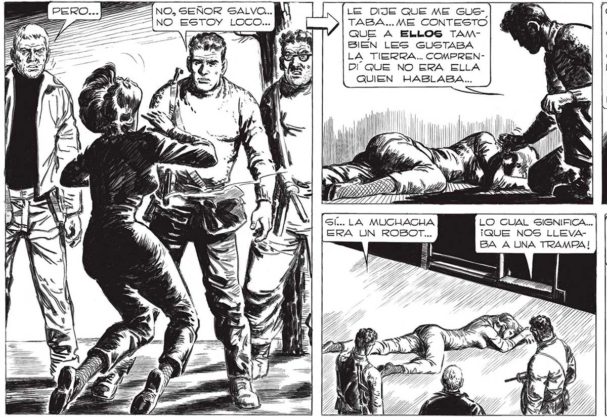
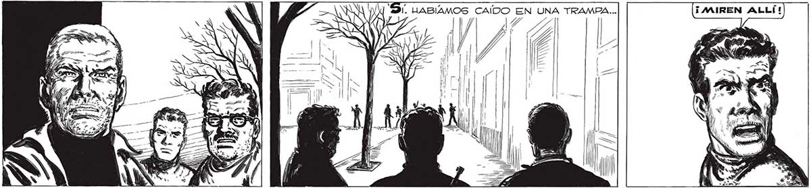

258 LE DIJE QUE AE GUE-, ANO ESTOY LOCO... TABA... ME CONTESTO a 4 e QUE A ELLOS TAMene 7 , SIEN LES GUSTABA LA TIERRA... COMPRENDÍ QUE NO ERA ELLA QUIEN HABLABA... COMPRENDO QUE QUIEN HABLABA POR 5U BOCA ERA EL 'MANO”QUE LA DIRIGIA. EL “MANO” | QUE NO ENTENDIO!” | LO QUE YO LE DOEA j id ELLA... AQUÍ ESTA” LA PRUEBA, UN TELEDIRECTOR ULTIMO MODELO. . A 8 a o > 4 A A SÍ... LA MUCHACHA LO CUAL SIGNIFICA... ERA UN ROBOT... ¡QUE NOS LLEVABA A UNA TRAMPA! UNA TRAMPA QUE UA DE ESTAR MUY PROXIMA... A LA VUELTA DE LA ESQUINA ... Xx > a a SN == ==. Il AT

